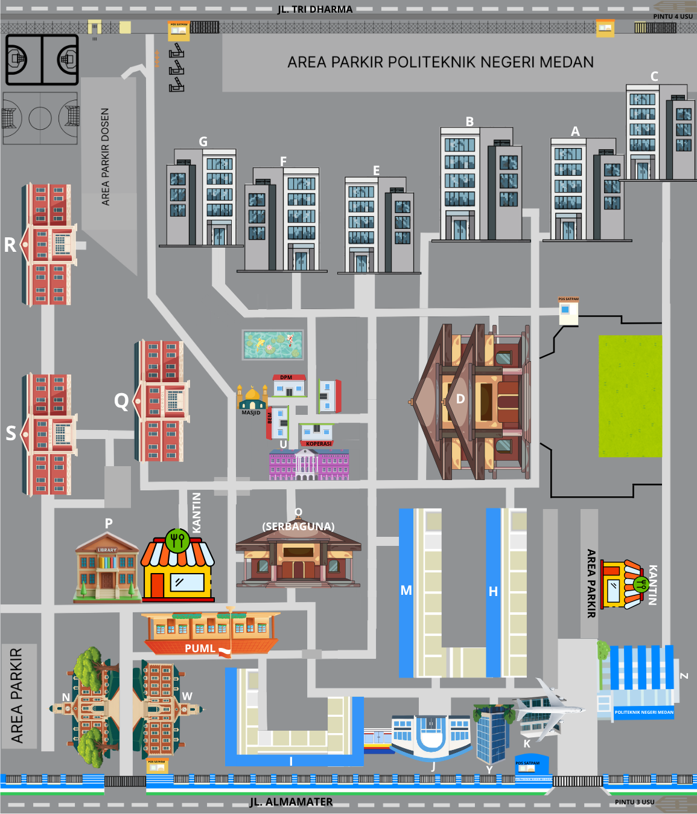

Peta Denah Lokasi


Direktori Gedung Akademik (A - Z)
GEDUNG A
Fungsi Utama: Gedung utama teknik mesin, bengkel mekanik berat dan permesinan manufaktur Jurusan Teknik Mesin. Digunakan secara intensif oleh beberapa program studi di bawah rumpun Teknik Mesin, seperti D3 Teknik Mesin, D3/D4 Teknik Konversi Energi (sekretariat HMPS berada di Lantai 2), D4 Teknologi Rekayasa Pengelasan dan Fabrikasi.
Fasilitas Ruangan: Laboratorium uji material, ruang mesin bubut, fraksionasi, dan ruang dosen Teknik Mesin. Di dalam gedung dua lantai ini, terdapat fasilitas ruang kuliah, ruang rapat jurusan, serta sekretariat Himpunan Mahasiswa Program Studi (HMPS).
GEDUNG B
Fungsi Utama: Gedung utama yang menjadi pusat kegiatan bagi Jurusan Teknik Sipil di Politeknik Negeri Medan. Menjadi markas bagi beberapa program studi unggulan: D3 Teknik Sipil, D4 Teknik Perancangan Jalan dan Jembatan (TPJJ), D4 Manajemen Rekayasa Konstruksi Gedung (MRKG).
Fasilitas Ruangan: Gedung dua lantai ini memfasilitasi administrasi jurusan, ruang perkuliahan, ruang dosen, serta ruang sekretariat Himpunan Mahasiswa Program Studi (HMPS) untuk rumpun Teknik Sipil.
GEDUNG C
Fungsi Utama: Pusat teori dan laboratorium praktikum Jurusan Teknik Elektro. Menjadi markas bagi mahasiswa dari program studi seperti: D3 Teknik Listrik, D3 Teknik Elektronika, D3 Teknik Telekomunikasi.
Fasilitas Ruangan: Lab instalasi listrik, lab sistem kendali, lab elektronika/telekomunikasi, dan kantor dosen Teknik Elektro.
GEDUNG D
Fungsi Utama: Gedung perkuliahan yang menjadi pusat kegiatan bagi Jurusan Teknik Elektro khusus untuk ruang teori, administrasi jurusan, ruang pimpinan jurusan, serta ruang rapat utama.
Fasilitas Ruangan: Ruang kelas, kantor administrasi dan pimpinan jurusan teknik elektro, ruang rapat utama.
GEDUNG E
Fungsi Utama: Secara spesifik difungsikan sebagai Bengkel & Laboratorium Teknik Elektronika.
Fasilitas Ruangan: Didominasi oleh fasilitas praktikum intensif. Menjadi pusat penajaman keahlian motorik bagi mahasiswa rumpun kelistrikan (Teknik Elektronika). Terdapat area praktikum mandiri, lab elektronika, dan markas robotika (sekretariat Robotic Center Polmed/RCP) tempat riset dan merakit robot kompetisi.
GEDUNG F
Fungsi Utama: Gedung fasilitas Bengkel & Laboratorium Teknik Listrik. Dirancang khusus untuk praktikum intensif mahasiswa rumpun kelistrikan, terutama program studi D3 Teknik Listrik dan D4 Teknologi Rekayasa Instalasi Listrik (TRIL).
Fasilitas Ruangan: Laboratorium Instalasi Listrik, Bengkel Mekanik Listrik, Lab Mesin Listrik, dan ruang kelas.
GEDUNG G
Fungsi Utama: Sebagai Laboratorium Telekomunikasi (Lab Telkom). Bagian ekosistem Jurusan Teknik Elektro, khususnya pusat praktikum intensif mahasiswa D3 Teknik Telekomunikasi dan prodi terkait kelistrikan serta teknologi informasi.
Fasilitas Ruangan: Dilengkapi laboratorium praktikum telekomunikasi dan memiliki ruang pelaksanaan ujian atau ruang perkuliahan khusus.
GEDUNG H
Fungsi Utama: Sebagai Laboratorium Konversi Energi (Lab Me/En). Memfasilitasi mahasiswa D3 Teknik Konversi Energi dan D4 Teknologi Rekayasa Pembangkit Energi (TRPE) untuk pengujian dan simulasi sistem daya serta energi.
Fasilitas Ruangan: Lab motor bakar, lab mekanika fluida & hidrolik, lab refrigrasi & pengondisian udara (AC), fasilitas panel surya.
GEDUNG I
Fungsi Utama: Kompleks Workshop & Laboratorium Teknik Sipil (WS SI). Dirancang khusus sebagai fasilitas praktikum motorik, pengujian material skala besar, serta simulasi konstruksi lapangan untuk Jurusan Teknik Sipil.
Fasilitas Ruangan: Ruang workshop kayu dan pengerjaan alat, lab bahan dan pengujian beton, lab mekanika tanah, lab hidrolika & surveying, serta gudang material & peralatan.
GEDUNG J
Fungsi Utama: Sebagai kompleks Workshop Struktur dan Konstruksi Baja/Kayu. Melengkapi fasilitas praktikum berat Teknik Sipil dengan memfokuskan kegiatannya pada simulasi perakitan kerangka bangunan gedung, jembatan, serta elemen fabrikasi struktural.
Fasilitas Ruangan: Ruang Workshop Fabrikan Baja, Lab Uji Tarik dan Tekan Baja, Gudang Logistik Besi dan Baja.
GEDUNG K
Fungsi Utama: Sebagai Gedung Ancillary (Fasilitas Penunjang Khusus). Dirancang satu lantai untuk mendukung operasional teknis serta utilitas lingkungan kampus.
Fasilitas Ruangan: Ruang unit teknis/workshop logistik, sistem utilitas dan control kelistrikan, serta ruang pemeliharaan (maintenance room).
GEDUNG M
Fungsi Utama: Sebagai bagian dari klaster perbengkelan, yaitu Bengkel Teknik Mesin / Workshop Teknik Mesin. Dirancang khusus sebagai fasilitas praktikum motorik dan manufaktur berat untuk Jurusan Teknik Mesin.
Fasilitas Ruangan: Workshop Pemesinan Bubut dan Frais, Laboratorium CNC (Computer Numerical Control), Area Kerja Bangku, dan Sistem Keamanan dan K3 Terpadu.
GEDUNG N
Fungsi Utama: Pusat perkuliahan teori, laboratorium komputer, dan markas administrasi bagi Jurusan Teknik Komputer dan Informatika (JTKI).
Fasilitas Ruangan: Ruang kelas, lab komputer dan jaringan, ruang rapat jurusan, dan sekretariat HMPS TRPL.
GEDUNG O (Serbaguna)
Fungsi Utama: Aula utama kampus untuk acara seremonial besar.
Fasilitas Ruangan: Lapangan olahraga indoor (futsal/bulu tangkis), panggung besar wisuda, pameran seni, dan seminar nasional.
GEDUNG P (Perpustakaan)
Fungsi Utama: Pusat literasi dan belajar mandiri.
Fasilitas Ruangan: Rak koleksi buku cetak, ruang baca ber-AC, area komputer penelusuran jurnal digital, dan ruang penyimpanan Tugas Akhir.
GEDUNG Q
Fungsi Utama: Digunakan sebagai gedung perkuliahan, laboratorium, dan pusat kegiatan akademik untuk Jurusan Akuntansi. Berkaitan dengan bidang keuangan dan bisnis.
Fasilitas Ruangan: Menaungi beberapa program studi seperti D-3 Akuntansi, D-3 Keuangan dan Perbankan, Sarjana Terapan (D-4) Akuntansi Keuangan Publik, dan Sarjana Terapan (D-4) Perbankan dan Keuangan Syariah.
GEDUNG R
Fungsi Utama: Kompleks perkuliahan teori dan Laboratorium Akuntansi berlantai tiga untuk Jurusan Akuntansi.
Fasilitas Ruangan: Ruang kelas, Laboratorium komputer terpadu (lantai dasar), Ruang Multimedia (Lantai 2), dan Ruang Rapat Jurusan/HMPS (Lantai 3).
GEDUNG S
Fungsi Utama: Gedung pusat bagi Jurusan Administrasi Niaga / Manajemen Bisnis.
Fasilitas Ruangan: Ruang kuliah teori, ruang dosen, sekretariat HMPS, serta Perpustakaan Administrasi Bisnis yang berada di lantai 2 (Nomor S.211).
GEDUNG U
Fungsi Utama: Salah satu gedung utama untuk Jurusan Teknik Komputer dan Informatika (JTKI) yang menjadi pusat aktivitas perkuliahan teori, administrasi prodi, serta lab komputer. Utama menampung D3 Teknik Komputer, D4 Teknologi Rekayasa Perangkat Lunak (TRPL), dll.
Fasilitas Ruangan: Ruang kelas, lab komputer besar untuk pemrograman, manajemen informatika, dan area pelaksanaan ujian berbasis komputer (CBT/UTBK).
GEDUNG W
Fungsi Utama: Gedung Laboratorium Komputer Terpadu dan Pusat Pembelajaran Teknologi Informasi yang merupakan fasilitas bersama (shared facilities).
Fasilitas Ruangan: Memfasilitasi praktikum berbasis teknologi/aplikasi bagi rumpun teknik maupun tata niaga. Terdapat lab komputer terpadu, lab komputer rumpun bisnis, serta beberapa ruangan kelas.
GEDUNG Y
Fungsi Utama: Kompleks Gedung Kuliah Terpadu dan Laboratorium Teknik Alat Berat (ATB). Gedung 3 lantai yang mengombinasikan kelas dengan fasilitas workshop teknologi energi terbarukan serta mekanika alat berat industri (Rekayasa Energi Terbarukan/TRET dan Teknik Alat Berat/ATB).
Fasilitas Ruangan: Lab alat berat, ruang kelas teori, sekretariat HMPS TRET.
GEDUNG Z
Fungsi Utama: Sebagai Gedung Direktorat & Pusat Administrasi Kampus Politeknik Negeri Medan. Bangunan megah berlantai 5 ini bertindak sebagai jantung birokrasi, manajemen pusat, dan pelayanan administrasi terpadu bagi seluruh civitas akademika.
Fasilitas Ruangan: Ruang Biro Akademik & Kemahasiswaan (Lantai 1), Kantor Direksi & Manajemen Pusat, Aula Utama Lantai 5, Ikon Monumen Pesawat Polmed, Ruang Unit Layanan Terpadu (ULT), LSP Polmed (Lembaga Sertifikasi Profesi), dan P3AI.
Layanan & Fasilitas Umum Polmed
Gedung PUML
Fungsi Utama: Pusat Pelayanan Administrasi Keuangan Umum, Registrasi Mahasiswa Baru, dan Layanan UKT (Uang Kuliah Tunggal). Bertindak sebagai hub pelayanan logistik birokrasi keuangan tingkat institusi.
Fasilitas Ruangan: Loket Pelayanan Keuangan, Ruang Wawancara UKT, Ruang tunggu/informasi, sistem komputasi terintegrasi, dan UPA Bahasa (Unit Penunjang Akademik Bahasa).
Kantin
Fungsi Utama: Pusat pujasera kuliner kampus.
Fasilitas Ruangan: Kios-kios makanan, minuman, dan tempat nongkrong atau diskusi kelompok mahasiswa.
Koperasi
Fungsi Utama: Toko perlengkapan perkuliahan mahasiswa.
Fasilitas Ruangan: Tempat membeli jas almamater, baju praktikum/bengkel (wearpack), alat tulis, dan layanan fotokopi.
Masjid
Fungsi Utama: Pusat ibadah muslim dan kegiatan keagamaan kampus.
Fasilitas Ruangan: Ruang salat jamaah, tempat wudu, dan kantor sekretariat Unit Kegiatan Mahasiswa Islam (UKMI).
BEM (Badan Eksekutif Mahasiswa)
Fungsi Utama: Kantor kerja organisasi eksekutif mahasiswa tingkat kampus.
Fasilitas Ruangan: Ruang rapat kabinet BEM, ruang administrasi program kerja, dan gudang logistik event.
DPM (Dewan Perwakilan Mahasiswa)
Fungsi Utama: Kantor kerja organisasi legislatif mahasiswa tingkat kampus.
Fasilitas Ruangan: Ruang sidang legislasi, ruang rapat pengawasan organisasi, dan kotak pengaduan aspirasi mahasiswa Polmed.